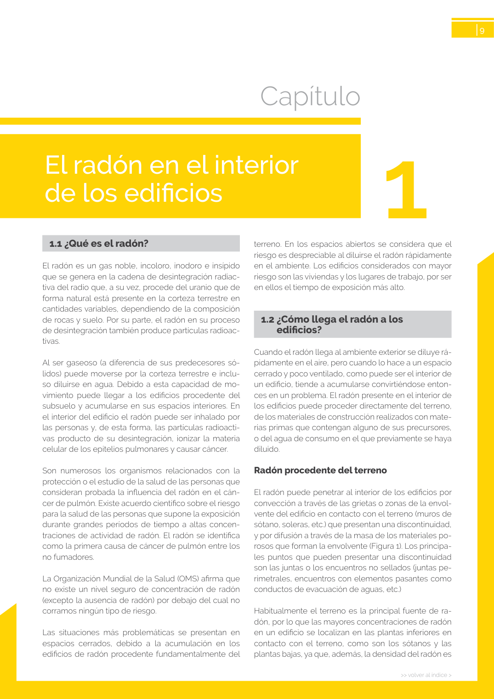

<!doctype html>
<html lang="es"><head><meta charset="utf-8">
<meta name="viewport" content="width=device-width, initial-scale=1">
<title>GUIA · Página física 9</title><link rel="stylesheet" href="../estilo.css">
</head><body>
<nav><a href="../index.html">Índice</a> › <a href="../doc/guia-pdf-f3314b0414fe-sin-fecha-e58e54b822cf.html">GUIA</a></nav>

<h1>GUIA · Página física 9</h1>
<header class="meta"><p><strong>Guia de rehabilitacion frente al radon Fichas</strong> · edición sin-fecha · capa guia</p>
<p>Documento <code>GUIA-PDF-f3314b0414fe</code> · SHA-256 del PDF <code>e58e54b822cf4ab00e258f0eb50c0f06a8c04e3730a7f530d224485e2a5bb02e</code></p>
<p>Página física 9 de 82.</p>
<p><a href="../../contenido/docs/GUIA-PDF-f3314b0414fe/sin-fecha__e58e54b822cf/fuente.pdf#page=9">Copia fiel del PDF fuente</a> · <a href="https://www.codigotecnico.org/pdf/GuiasyOtros/GuiaRadon/Guia_de_rehabilitacion_frente_al_radon+Fichas.pdf">Fuente oficial</a></p>
<p><a href="https://www.codigotecnico.org/Guias/GuiaRadon.html">Ficha de la disposición en la fuente oficial</a></p>
<div class="cita"><p><a href="../../contenido/docs/GUIA-PDF-f3314b0414fe/sin-fecha__e58e54b822cf/fuente.pdf#page=2">Créditos y autoría en el PDF fuente</a>. Reproducción con cita de fuente y autores.</p>
<p>Permiso literal: Se permite la reproducción total o parcial del contenido de este nible en el momento de su publicación. No se aceptará por las institu­ documento siempre y cuando se cite la fuente original</p>
<details><summary>Leer los créditos completos y la autoría</summary><pre class="literal">Este documento ha sido elaborado por el Instituto de ciencias
de la construcción Eduardo Torroja (IETcc) bajo la supervisión
de la Dirección General de Agenda Urbana y Arquitectura del
Ministerio de Transportes, Movilidad y Agenda Urbana (MITMA).

El IETcc, perteneciente al Consejo Superior de Investigaciones
Científicas (CSIC), es el centro de investigación en edificación
de referencia en España. La Unidad de Calidad en la Construc­
ción del IETcc asesora al MITMA en la elaboración del Código
Técnico de la Edificación que, desde el año 2019, cuenta con la
sección HS6 Protección frente a la exposición al radón.

Dirección y Coordinación:
Ministerio de Transportes, Movilidad y Agenda Urbana
 Isabel Marcos Anasagasti
 Raquel Lara Campos
 Eduardo González de Prado
Instituto de ciencias de la construcción Eduardo Torroja CSIC
 Pilar Linares Alemparte

Autoras:
 Pilar Linares Alemparte
 Sonia García Ortega

Colaboradoras:
 Virginia Sánchez Ramos
 Karina Angélica García Pardo

Edita:
 Centro de Publicaciones Secretaría General Técnica
 Ministerio de Transportes, Movilidad y Agenda Urbana©

Entidad colaboradora:
 Consejo Superior de Investigaciones Científicas · CSIC
 Ministerio de Ciencia e Innovación

    Catálogo de publicaciones de la Administración General
    del Estado: publicacionesoficiales.boe.es

    Centro virtual de publicaciones del Ministerio de Transpor­
     tes, Movilidad y Agenda Urbana: www.mitma.gob.es

    Página web del Código Técnico de la Edificación:

                                                                                                                                                                              SECRETARÍA                                                                                                                                                                     GENERAL                                                                                                                                                                         DE    www.codigotecnico.org                                                                                                                                              AGENDA URBANA                                                                                                                                                                           Y VIVIENDA                                                                                                                                                 MINISTERIO                                                                                                           GOBIERNO                                                                                                                           DE                                                                                                                                           TRANSPORTES,                                                                                                                                                 MOVILIDAD                                                                                                             DE ESPAÑA                                                                                                                               Y AGENDA                                                                                                                           URBANA                                                                                                                                                               DIRECCIÓN                                                                                                                                                                     GENERAL                                                                                                                                                                         DE
Maquetación y diseño gráfico:                                                                                                     AGENDA URBANAY ARQUITECTURA
 Lapizmente. Estrategia • Diseño Gráfico


                                                                                                                                             CIENCIAFotografía portada:                                                                                GOBIERNODE ESPAÑA      MINISTERIODEE INNOVACIÓN
 Sonia García Ortega

Los contenidos o ideas recogidas en este documento pertenecen a
sus autores. Este documento está basado en el conocimiento dispo­     Se permite la reproducción total o parcial del contenido de este
nible en el momento de su publicación. No se aceptará por las institu­     documento siempre y cuando se cite la fuente original y a sus
ciones ni los autores implicados responsabilidad de ningún tipo por el                                                                    autores.
uso de estas recomendaciones. Las figuras tienen carácter ilustrativo
y no deben interpretarse como detalles constructivos.</pre></details></div>
<div class="aviso"><strong>Alcance y límites</strong><ul><li>Extracción automática sin revisión técnica humana completa. Contraste tablas, fórmulas, notas y excepciones con el PDF. La edición disponible no determina la vigencia ni la aplicabilidad a un proyecto.</li><li>Guia o documento divulgativo; no es texto normativo.</li><li>Extracción automática; el cotejo humano está pendiente.</li><li>Semántica y tablas no equivalen a validación exhaustiva.</li></ul></div></header>
<nav><a href="guia-pdf-f3314b0414fe-sin-fecha-e58e54b822cf__p0008.html">← Página 8</a> · <a href="guia-pdf-f3314b0414fe-sin-fecha-e58e54b822cf__p0010.html">Página 10 →</a></nav>
<p>Formato: <a href="../../contenido/docs/GUIA-PDF-f3314b0414fe/sin-fecha__e58e54b822cf/pagina/p0009.md">Texto de la página (Markdown)</a></p>
<p><a href="../../contenido/docs/GUIA-PDF-f3314b0414fe/sin-fecha__e58e54b822cf/bloque/p0009.json">JSON de bloques</a></p>
<pre class="literal">&gt;&gt; volver al índice &gt;
9
1.1 ¿Qué es el radón?
El radón es un gas noble, incoloro, inodoro e insípido 
que se genera en la cadena de desintegración radiac­
tiva del radio que, a su vez, procede del uranio que de 
forma natural está presente en la corteza terrestre en 
cantidades variables, dependiendo de la composición 
de rocas y suelo. Por su parte, el radón en su proceso 
de desintegración también produce partículas radioac­
tivas.
Al ser gaseoso (a diferencia de sus predecesores só­
lidos) puede moverse por la corteza terrestre e inclu­
so diluirse en agua. Debido a esta capacidad de mo­
vimiento puede llegar a los edificios procedente del 
subsuelo y acumularse en sus espacios interiores. En 
el interior del edificio el radón puede ser inhalado por 
las personas y, de esta forma, las partículas radioacti­
vas producto de su desintegración, ionizar la materia 
celular de los epitelios pulmonares y causar cáncer.
Son numerosos los organismos relacionados con la 
protección o el estudio de la salud de las personas que 
consideran probada la influencia del radón en el cán­
cer de pulmón. Existe acuerdo científico sobre el riesgo 
para la salud de las personas que supone la exposición 
durante grandes períodos de tiempo a altas concen­
traciones de actividad de radón. El radón se identifica 
como la primera causa de cáncer de pulmón entre los 
no fumadores.
La Organización Mundial de la Salud (OMS) afirma que 
no existe un nivel seguro de concentración de radón 
(excepto la ausencia de radón) por debajo del cual no 
corramos ningún tipo de riesgo.
Las situaciones más problemáticas se presentan en 
espacios cerrados, debido a la acumulación en los 
edificios de radón procedente fundamentalmente del 
terreno. En los espacios abiertos se considera que el 
riesgo es despreciable al diluirse el radón rápidamente 
en el ambiente. Los edificios considerados con mayor 
riesgo son las viviendas y los lugares de trabajo, por ser 
en ellos el tiempo de exposición más alto.
1.2 ¿Cómo llega el radón a los 
edificios?
Cuando el radón llega al ambiente exterior se diluye rá­
pidamente en el aire, pero cuando lo hace a un espacio 
cerrado y poco ventilado, como puede ser el interior de 
un edificio, tiende a acumularse convirtiéndose enton­
ces en un problema. El radón presente en el interior de 
los edificios puede proceder directamente del terreno, 
de los materiales de construcción realizados con mate­
rias primas que contengan alguno de sus precursores, 
o del agua de consumo en el que previamente se haya 
diluido.
Radón procedente del terreno
El radón puede penetrar al interior de los edificios por 
convección a través de las grietas o zonas de la envol­
vente del edificio en contacto con el terreno (muros de 
sótano, soleras, etc.) que presentan una discontinuidad, 
y por difusión a través de la masa de los materiales po­
rosos que forman la envolvente (Figura 1). Los principa­
les puntos que pueden presentar una discontinuidad 
son las juntas o los encuentros no sellados (juntas pe­
rimetrales, encuentros con elementos pasantes como 
conductos de evacuación de aguas, etc.)
Habitualmente el terreno es la principal fuente de ra­
dón, por lo que las mayores concentraciones de radón 
en un edificio se localizan en las plantas inferiores en 
contacto con el terreno, como son los sótanos y las 
plantas bajas, ya que, además, la densidad del radón es 
Capítulo
El radón en el interior
de los edificios
1
</pre>
<figure><a href="../../contenido/docs/GUIA-PDF-f3314b0414fe/sin-fecha__e58e54b822cf/figura/p0009.png"></a><figcaption>Página visual 9, para contrastar fórmulas, tablas y figuras.</figcaption></figure><h2>Tablas extraídas</h2><p>Datos candidatos: compruebe celdas y notas en el PDF.</p><ul><li><a href="../../contenido/docs/GUIA-PDF-f3314b0414fe/sin-fecha__e58e54b822cf/tabla/p0009_t01.json">p0009_t01.json</a></li></ul>
<h2>Segmentos que incluyen esta página</h2><ul>
<li><a href="../apartado/guia-pdf-f3314b0414fe-sin-fecha-e58e54b822cf__a0013.html">a0013 · El radón en el interior de los edificios</a></li>
<li><a href="../apartado/guia-pdf-f3314b0414fe-sin-fecha-e58e54b822cf__a0014.html">a0014 · El radón en el interior de los edificios / 1.1 ¿Qué es el radón?</a></li>
<li><a href="../apartado/guia-pdf-f3314b0414fe-sin-fecha-e58e54b822cf__a0015.html">a0015 · El radón en el interior de los edificios / 1.2 ¿Cómo llega el radón a los edificios?</a></li>
<li><a href="../apartado/guia-pdf-f3314b0414fe-sin-fecha-e58e54b822cf__a0016.html">a0016 · El radón en el interior de los edificios / 1.2 ¿Cómo llega el radón a los edificios? / Radón procedente del terreno</a></li>
<li><a href="../apartado/guia-pdf-f3314b0414fe-sin-fecha-e58e54b822cf__a0017.html">a0017 · Capítulo El radón en el interior</a></li>
<li><a href="../apartado/guia-pdf-f3314b0414fe-sin-fecha-e58e54b822cf__a0018.html">a0018 · Capítulo El radón en el interior / de los edificios</a></li>
</ul>
<footer>Generado estáticamente desde el corpus normalizado; sin JavaScript ni servicios externos. El HTML es una vista reproducible; conserve la fuente y la edición al citar.</footer>
</body></html>
